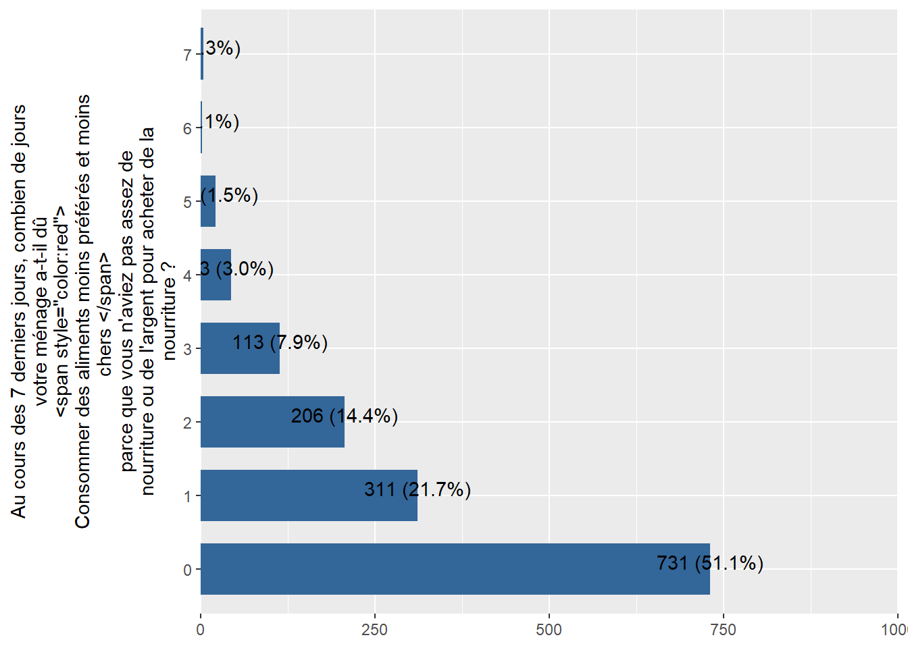

Merging all data
Chad_baseline_2018 <- labelled::to_factor(Chad_baseline_2018)
Chad_ea_2019 <- labelled::to_factor(Chad_ea_2019)
Chad_ea_2020 <- labelled::to_factor(Chad_ea_2020)
Chad_ea_2021 <- labelled::to_factor(Chad_ea_2021)
Chad_ea_2022 <- labelled::to_factor(Chad_ea_2022)
Chad_ea_2023 <- labelled::to_factor(Chad_ea_2023)
Chad_pdm_2020 <- labelled::to_factor(Chad_pdm_2020)
Chad_pdm_2021 <- labelled::to_factor(Chad_pdm_2021)
Chad_pdm_2022 <- labelled::to_factor(Chad_pdm_2022)
Chad_pdm_2023 <- labelled::to_factor(Chad_pdm_2023)
WFP_Chad<-plyr::rbind.fill(Chad_baseline_2018,
Chad_ea_2019,
Chad_ea_2020,
Chad_ea_2021,
Chad_ea_2022,
Chad_ea_2023,
Chad_pdm_2020,
Chad_pdm_2021,
Chad_pdm_2022,
Chad_pdm_2023)
#WFP_Chad$SCA<-as.numeric(WFP_Chad$SCA)
WFP_Chad = WFP_Chad %>% dplyr::select(key_vars,var_needed)
var_lhcsi = WFP_Chad %>%
dplyr::select(starts_with("LhCSI")) %>% names()
WFP_Chad <- WFP_Chad %>%
mutate_at(var_lhcsi, as.numeric)
# Replace NA with Not Applicable for all LhCSI variables
WFP_Chad <- WFP_Chad %>%
mutate(across(var_lhcsi, ~ifelse(is.na(.), 4, .)))
# Labels mapping
label_map <- c(
`Non, je n'ai pas été confronté à une insuffisance de nourriture` = 1,
`Non, parce que j'ai déjà vendu ces actifs ` = 2,
Oui = 3,
`Non applicable` = 4
)
# Apply labels using mutate() and across()
WFP_Chad <- WFP_Chad %>%
mutate(across(var_lhcsi,
~ labelled::labelled(., label_map)))
haven::write_dta(WFP_Chad,paste0(dir_output_data,"/","WFP_Chad_LhCSI.dta"))
library(haven)
library(labelled) # for general functions to work with labelled data
library(tidyverse) # general wrangling
library(dplyr)
library(Hmisc)
library(gtsummary) # to demonstrate automatic use of variable labels in summary tables
library(readxl)
library(foreign)
library(sjPlot)
library(sjmisc)
library(sjlabelled) # for example efc data set with variable labels
library(stringr)
dir_input_data = "C:/Users/AHema/OneDrive - CGIAR/Desktop/WFP Resilience dataset/data/input_data/Chad"
dir_output_data = "C:/Users/AHema/OneDrive - CGIAR/Desktop/WFP Resilience dataset/data/output_data/Chad"
Chad_Harmonization_variables <- read_excel(paste0(dir_input_data,"/Chad_Harmonization.xlsx"),
sheet = "variables_harmonization")
#View(Chad_Harmonization_variables)
Chad_Harmonization_description <- read_excel(paste0(dir_input_data,"/Chad_Harmonization.xlsx"),
sheet = "description")
#View(Chad_Harmonization_description)
lst_data = Chad_Harmonization_description$Data
lst_test = Chad_Harmonization_description$Name
for(i in 1:length(lst_data)) { # Head of for-loop
assign(lst_test[i], # Read and store data frames
read_sav(paste0(dir_input_data,"/",lst_data[i])))
}
for (j in 1:length(lst_test)){
df= get(lst_test[j], envir = .GlobalEnv)
for (i in 1:nrow(Chad_Harmonization_variables)){
df[,Chad_Harmonization_variables$NewVariable_Name[i]]=ifelse(is.na(Chad_Harmonization_variables[i,lst_test[j]]),NA,df[,Chad_Harmonization_variables[i,lst_test[j]][[1]]])
}
df<-df %>% select(Chad_Harmonization_variables$NewVariable_Name)
assign(lst_test[j], # Read and store data frames
df)
#write_sav(df, paste0(dir_output_data,"/",lst_test[j],".sav"))
#write_dta(df, paste0(dir_output_data,"/",lst_test[j],".dta"))
}
Chad_pdm_2022$ID = 1:nrow(Chad_pdm_2022)
var_needed = c("rCSI",
"rCSILessQlty",
"rCSIBorrow",
"rCSIMealSize",
"rCSIMealAdult",
"rCSIMealNb")
reduced coping strategy index OU l’indice réduit des stratégies de survie (rCSI)
rCSI : Consommer des aliments moins préférés et moins chers
Chad_baseline_2018 %>%
sjPlot::plot_frq(coord.flip =T,rCSILessQlty,show.na = T)

Chad_ea_2019%>%
sjPlot::plot_frq(coord.flip =T,rCSILessQlty,show.na = T)

Chad_ea_2020%>%
sjPlot::plot_frq(coord.flip =T,rCSILessQlty,show.na = T)

Chad_ea_2021%>%
sjPlot::plot_frq(coord.flip =T,rCSILessQlty,show.na = T)

Chad_ea_2022%>%
sjPlot::plot_frq(coord.flip =T,rCSILessQlty,show.na = T)
Chad_pdm_2020%>%
sjPlot::plot_frq(coord.flip =T,rCSILessQlty,show.na = T)
Chad_pdm_2021%>%
sjPlot::plot_frq(coord.flip =T,rCSILessQlty,show.na = T)
Chad_pdm_2022%>%
sjPlot::plot_frq(coord.flip =T,rCSILessQlty,show.na = T)

rCSI : Emprunter de la nourriture ou compter sur l’aide des parents/amis
Chad_baseline_2018 %>%
sjPlot::plot_frq(coord.flip =T,rCSIBorrow,show.na = T)
Chad_ea_2019%>%
sjPlot::plot_frq(coord.flip =T,rCSIBorrow,show.na = T)

Chad_ea_2020%>%
sjPlot::plot_frq(coord.flip =T,rCSIBorrow,show.na = T)

Chad_ea_2021%>%
sjPlot::plot_frq(coord.flip =T,rCSIBorrow,show.na = T)

Chad_ea_2022%>%
sjPlot::plot_frq(coord.flip =T,rCSIBorrow,show.na = T)

Chad_pdm_2020%>%
sjPlot::plot_frq(coord.flip =T,rCSIBorrow,show.na = T)
Chad_pdm_2021%>%
sjPlot::plot_frq(coord.flip =T,rCSIBorrow,show.na = T)
Chad_pdm_2022%>%
sjPlot::plot_frq(coord.flip =T,rCSIBorrow,show.na = T)
rCSI : Diminuer la quantité consommée pendant les repas
Chad_baseline_2018 %>%
sjPlot::plot_frq(coord.flip =T,rCSIMealSize,show.na = T)

Chad_ea_2019%>%
sjPlot::plot_frq(coord.flip =T,rCSIMealSize,show.na = T)
Chad_ea_2020%>%
sjPlot::plot_frq(coord.flip =T,rCSIMealSize,show.na = T)

Chad_ea_2021%>%
sjPlot::plot_frq(coord.flip =T,rCSIMealSize,show.na = T)
Chad_ea_2022%>%
sjPlot::plot_frq(coord.flip =T,rCSIMealSize,show.na = T)

Chad_pdm_2020%>%
sjPlot::plot_frq(coord.flip =T,rCSIMealSize,show.na = T)

Chad_pdm_2021%>%
sjPlot::plot_frq(coord.flip =T,rCSIMealSize,show.na = T)
Chad_pdm_2022%>%
sjPlot::plot_frq(coord.flip =T,rCSIMealSize,show.na = T)
rCSI : Restreindre la consommation des adultes pour nourrir les enfants
Chad_baseline_2018 %>%
sjPlot::plot_frq(coord.flip =T,rCSIMealAdult,show.na = T)

Chad_ea_2019%>%
sjPlot::plot_frq(coord.flip =T,rCSIMealAdult,show.na = T)

Chad_ea_2020%>%
sjPlot::plot_frq(coord.flip =T,rCSIMealAdult,show.na = T)
Chad_ea_2021%>%
sjPlot::plot_frq(coord.flip =T,rCSIMealAdult,show.na = T)
Chad_ea_2022%>%
sjPlot::plot_frq(coord.flip =T,rCSIMealAdult,show.na = T)

Chad_pdm_2020%>%
sjPlot::plot_frq(coord.flip =T,rCSIMealAdult,show.na = T)

Chad_pdm_2021%>%
sjPlot::plot_frq(coord.flip =T,rCSIMealAdult,show.na = T)

Chad_pdm_2022%>%
sjPlot::plot_frq(coord.flip =T,rCSIMealAdult,show.na = T)
rCSI : Diminuer le nombre de repas par jour
library(tidyverse)
# List of data frames you want to process
data_frames <- list(
Chad_baseline_2018,
Chad_ea_2019,
Chad_ea_2020,
Chad_ea_2021,
Chad_ea_2022,
Chad_pdm_2020,
Chad_pdm_2021,
Chad_pdm_2022
)
# Function to apply sjPlot::plot_frq to each data frame
plot_frq_wrapper <- function(df) {
sjPlot::plot_frq(df, coord.flip = TRUE, rCSIMealNb, show.na = TRUE)
}
# Using purrr::map to apply the function to each data frame
plots <- map(data_frames, plot_frq_wrapper)
plots